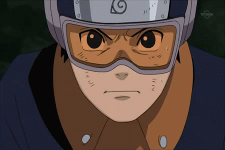
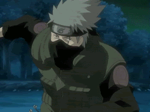
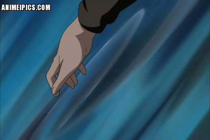
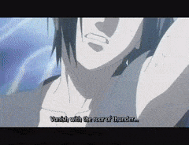

Chakra (チャクラ, chakura) is a substance native to lifeforms on some planets. Due to it being the component to
create Chakra Fruit, the Ōtsutsuki Clan travel from planet to planet to absorb all the chakra on them in order
to create the fruit to consume.
On Earth, humans didn't have chakra
until Hamura and Hagoromo Ōtsutsuki were born with it, which was a result of their mother Kaguya eating their
planet's chakra fruit from the God Tree. Hagoromo spread chakra to others through a practice called ninshū,
intending to create peace by using the chakra to connect people's spiritual energy so that they would understand
one another without even talking. However, the people did not use chakra in the way Hagoromo hoped, instead
using it to connect their inner spiritual and physical energies. They kneaded their inner chakra to amplify and
weaponise it, creating what is now known as ninjutsu.
Fire Release:
Fire
Release (火遁, Katon, English TV: Fire Style) is one of the five basic nature transformations. Fire Release is
commonly affiliated with the Tiger hand seal.
Fire Release is almost always used offensively, typically by
kneading chakra in the body into flames that the user breathes from the mouth. Simpler applications of Fire
Release include creating a stream of fire, or alternatively breaking the stream into bursts of flames. Once
produced, the fire can be shaped or otherwise manipulated, but exerting such control requires careful skill. If
the flames are channelled into a weapons, such as a sword, that allows the user greater finesse with how the
fire is spread. Fire Release can take the form of ash clouds that linger in the air, burning and blinding those
caught in it, or be erected as a shield, burning away anything that tries to cross it. Less commonly, Fire
Release encompasses using flames from other sources, such as exploding tags, with users focusing the explosions
against opponents.
Water
Release:
Water Release (水遁, Suiton, English
TV: Water Style) is one of the five basic nature transformations.
Water Release jutsu are most easily
performed using existing water sources, such as lakes or rivers.[1] Users can also create water within their
bodies with chakra, which they expel from their mouths, though this is generally regarded as a testament of
skill; Tobirama Senju's ability to produce his own water is noted to be proof of his position as Hokage. Water
Release is typically used offensively, doing battering damage because of the sheer volume of water or slicing
damage because of the water's high pressure. Water Release can be used to trap targets, such as imprisoning them
with dense water or ensnaring them with sticky water. Defensively, Water Formation Wall is a common option, with
users surrounding themselves with water to be protected from harm. Alternatively, users can hide themselves from
opponents with thick mist to obscure vision or water droplets to render the user invisible.
Earth
Release:
 Earth
Release (土遁, Doton, English TV: Earth Style) is one of the five basic nature transformations. Earth Release is
commonly affiliated with the Snake hand seal.
Earth
Release (土遁, Doton, English TV: Earth Style) is one of the five basic nature transformations. Earth Release is
commonly affiliated with the Snake hand seal.
Earth Release encompasses any earthen material, from dirt to
stone to clay, and in fact often entails changing one to another. For most Earth Release jutsu, users place
their hands on the ground and use their chakra to alter its form. Less commonly, users create earth within their
bodies, which they eject from their mouth. Simpler applications of Earth Release involve changing the terrain
around the user. Offensively, Earth Release can be clumped together for use as a projectile or broken up to
create hazards for enemies. Targets can be trapped by creating an rock dome around them or a muddy pit that they
sink into. Defensively, earth can be raised around the user as a fortification against attack, Earth-Style Wall
being one of the more common options. Alternatively, Earth Release users can burrow underground in order to
escape harm and, indeed, combat.
Wind Release:
Wind Release (風遁, Fūton, English TV:
Wind Style) is one of the five basic nature transformations.
Wind Release is the rarest of the five nature
transformations, but those who can use it are able to cut through anything.[2] Asuma Sarutobi uses it by
channelling wind chakra into his Chakra Blades, making the blades far sharper and giving them greater reach.
Wind Release can also be exhaled from the user's mouth, such as to blow away everything in the area, or
generated with the user's hands, allowing precision strikes. Although Wind Release has naturally good range and
power, it can be further enhanced by compressing it or layering different wind streams together.
Lightning
Release:
Lightning Release (雷遁, Raiton, English TV: Lightning Style) is one of the five
basic nature transformations.
In order to perform most Lightning Release jutsu, users must convert their
chakra into electricity. One of the simpler ways to use this electricity is to channel it into ninja tools,
increasing the weapon's cutting power by making it vibrate or causing a numbing effect to those the weapons
contact. For the Chidori (and the Lightning Cutter), Kakashi Hatake simply gathers the lightning chakra to his
hand, causing severe piercing damage to anything or anyone his hand touches. Sasuke Uchiha sometimes makes
broader use of the Chidori's chakra, such as giving it shape so he can attack from greater distances or emitting
it around himself to attack those nearby. Less commonly, users can instead take control of natural lightning, as
Sasuke does with Kirin; because natural lightning can be difficult to come across, he uses Fire Release in order
to produce ideal weather conditions for lightning.